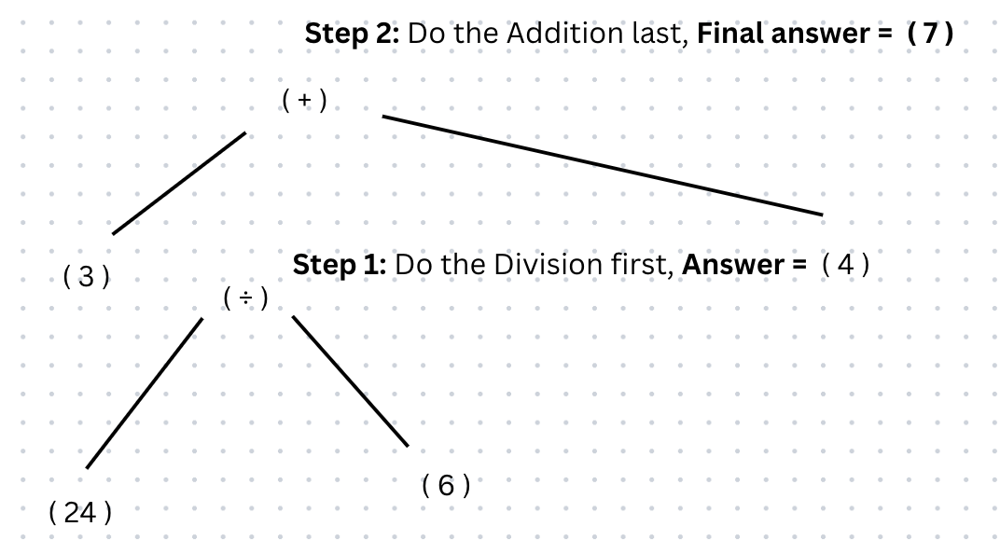
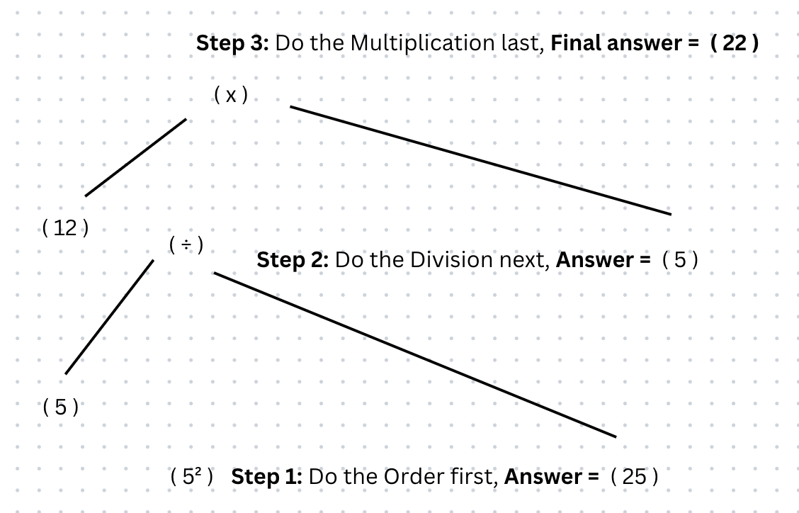
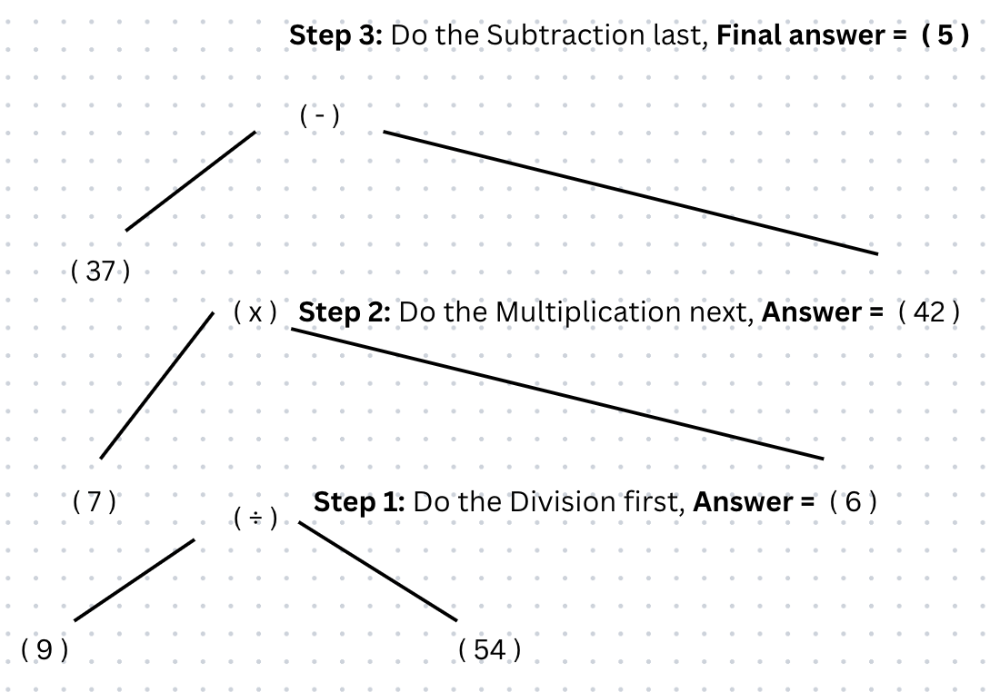

Division is the 3rd operator in the BODMAS rule
Any divisions are done after anything in brackets or orders if there are any
Division has the mathematical operation of '÷'
Remember the order in which you work through a calculation is according to ORDER OF IMPORTANCE
Below are some examples of BODMAS questions using division to give you an idea:
Below are some step by step examples of BODMAS questions using division and where you might go wrong:
Answer = 7
Potential mistake: You may end up calculating 3 + 24 as you may know to work from left to right for equations but, in BODMAS you work based on the order of importance, therefore you must do calculate the division and then finally add.
Here is a further step by step breakdown for you to understand:
Answer = 22
Potential mistake: You may end up calculating 12 - 25 after calculating 52 (= -13) as you may know to work from left to right for equations but, in BODMAS you work based on the order of importance, therefore you must calculate the order, then you divide and finally multify.
Here is a further step by step breakdown for you to understand:
Answer = 5
Potential mistake: You may end up calculating 7 x 54 as you may know to work from left to right for equations but, in BODMAS you work based on the order of importance, therefore you must do calculate the division, then you multify and finally subtract.
Here is a further step by step breakdown for you to understand:
Have a go at the example below:
Let AJAX change this text